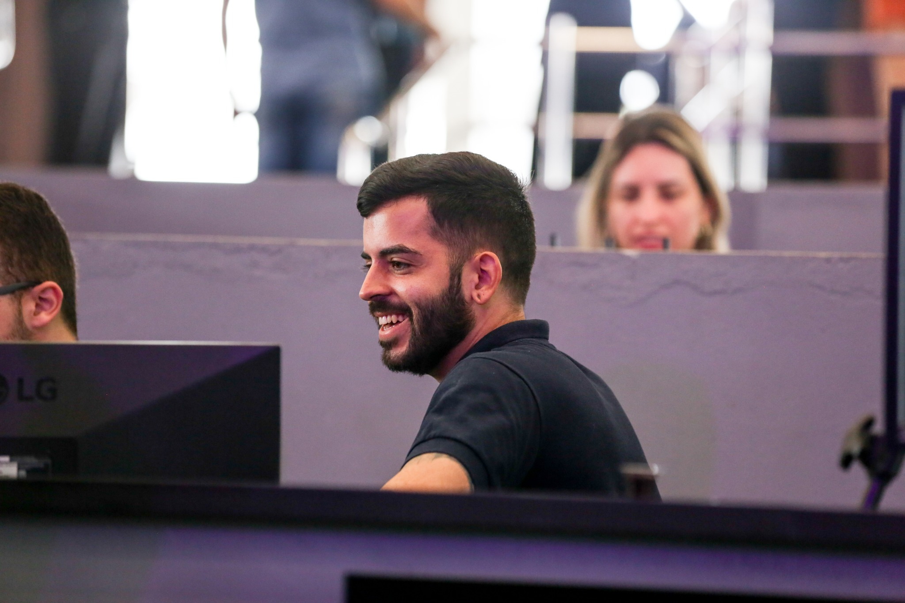

Olá! Seja muito bem vindo.
Me chamo Mateus Amorim Marques.
Sou Cristão, graduado no Centro de Treinamento Biblico Rhema.
Graduado em Ciência de Dados pela Universidade Cruzeiro do Sul, com habilidades na criação de bancos de dados, análise de dados, modelagem de bancos de dados, web scraping...
Cursando Engenharia de Software na Universidade Cruzeiro do Sul, com habilidades na criação de sites interativos, paginas de cadastro...
Pyton, SQL, R, Html, Css, JavaScript, PHP, PowerBI...